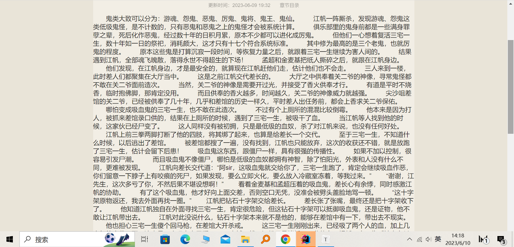
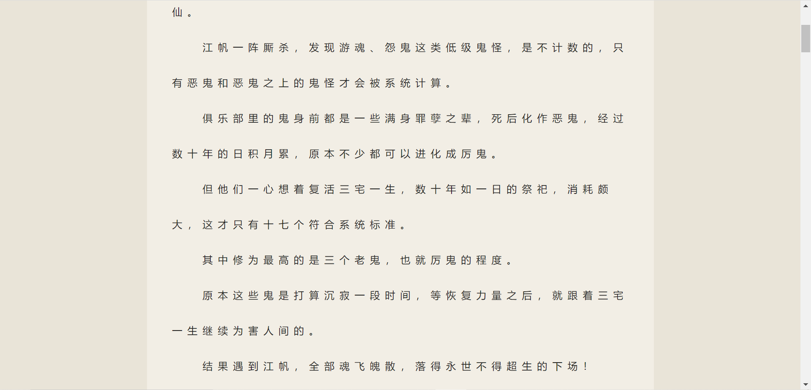
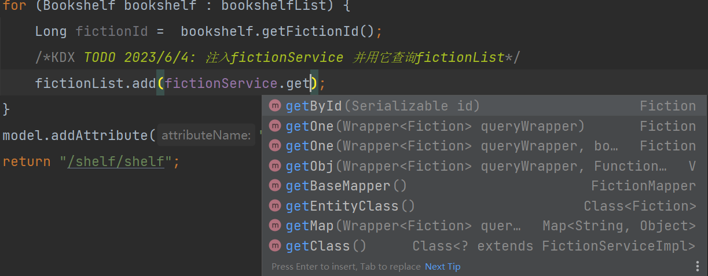
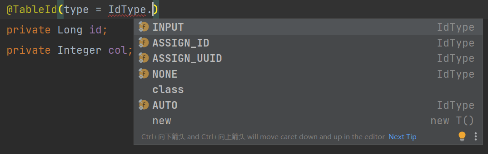
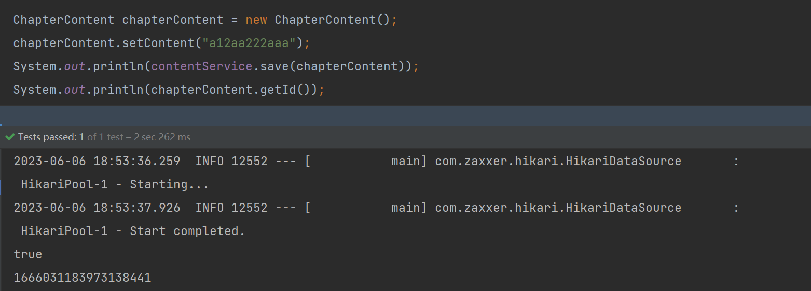

ebooks项目小记
前端
jQuery与原生js不要混用，否则可能导致原生js失效，查看详情
jquery延时
1 | setTimeout(function () { |
jquery比较
在jquery中,
1 | let next = $('#next').attr('href'); |
如果next未被定义即值为undefined，那么next==null 的值为true，
next===null的值为false。
1 | let next = $('#next').attr('href'); |
大文本样式设计(中文)
字间距：letter-spcing，行间距：line-height，边界留白：padding，保留换行符：white-space: pre-wrap
添加样式前效果：
 样式代码：
1 | .content p{ |
添加样式后：
thymeleaf
thymelea中用|***|拼接字符串时 ，不能在其内部进行计算
错误示范：
1 | th:href="|@{/chapter/read/}${fictionId}/(${sort}-1)|" |
正确做法
1 | th:href="|@{/chapter/read/}${fictionId}/|+(${sort}-1)" |
后端
mybatis-plus
getById()方法
在mybatis-plus中，当我们想调用，service层的getById()方法时，会发现idea会提示需要
Serializable类型的参数，但我们只需传入主键列对应的java类型即可。
也就是图中的fictionId。
存入数据后获得自增主键
一定不能给主键列添加如下注解,否则入参取不到id值
1 | private static final long serialVersionUID = -5212100809208703881L; |
可以不添加注解或将type设置成assign_id,none,auto
注意主键会被塞入到入参中，而不是以返回值的形式给出
也可以给Mapper接口定义如下方法，并通过该方法保存数据，从入参中获取主键Id
1 |
|
SuppressWarnings
抑制可能出现空指针警告及变量未使用警告
1 |
idea
快捷键
alt+j快捷键
修改同一段落中相同的代码，按住alt连续按j选中更多的相同代码
shift+f6
也是修改同一段落中的相同代码
ctrl+alt+l
代码格式化